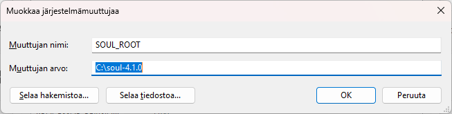
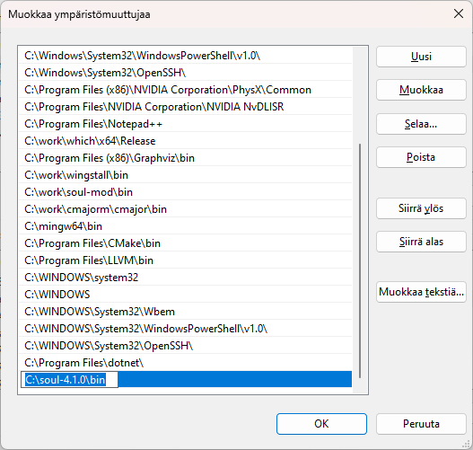

Installation from the ZIP package
- Extract the soul-4.1.0.zip package to a directory of your choice.
- Create a SOUL_ROOT environment variable and set it to point to the soul-4.1.0 directory that is under the directory where you extracted.

- Add the soul-4.1.0\bin directory to your PATH environment variable.

- Open the soul-mod\config\build.props file with a text editor.
- Change the value of the BOOST_INCLUDE_DIR and BOOST_LIB_DIR macros within the PropertyGroup Label="UserMacros" element
to contain the paths to your Boost include directory and Boost library directory.
- Open a command prompt to the soul-4.1.0\examples\minilang directory and run build.bat
- The bat runs slg and spg with the minilang project files.
- If the programs run and print:
'lexers for project 'minilang.slg' generated successfully.' and
'parsers for project 'minilang.spg' generated successfully.' everything works fine.